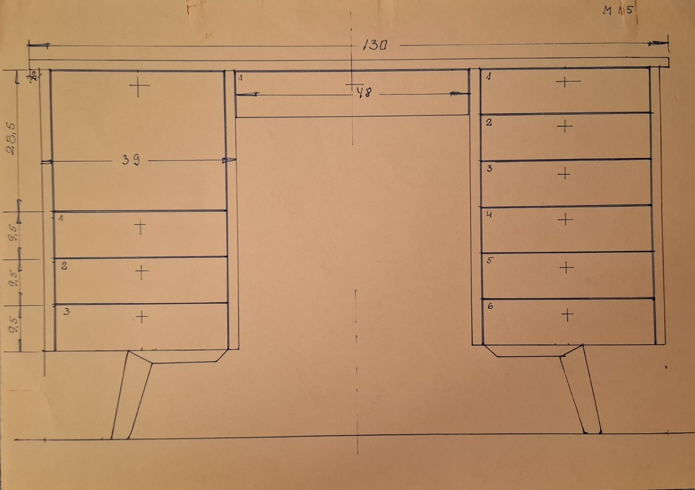
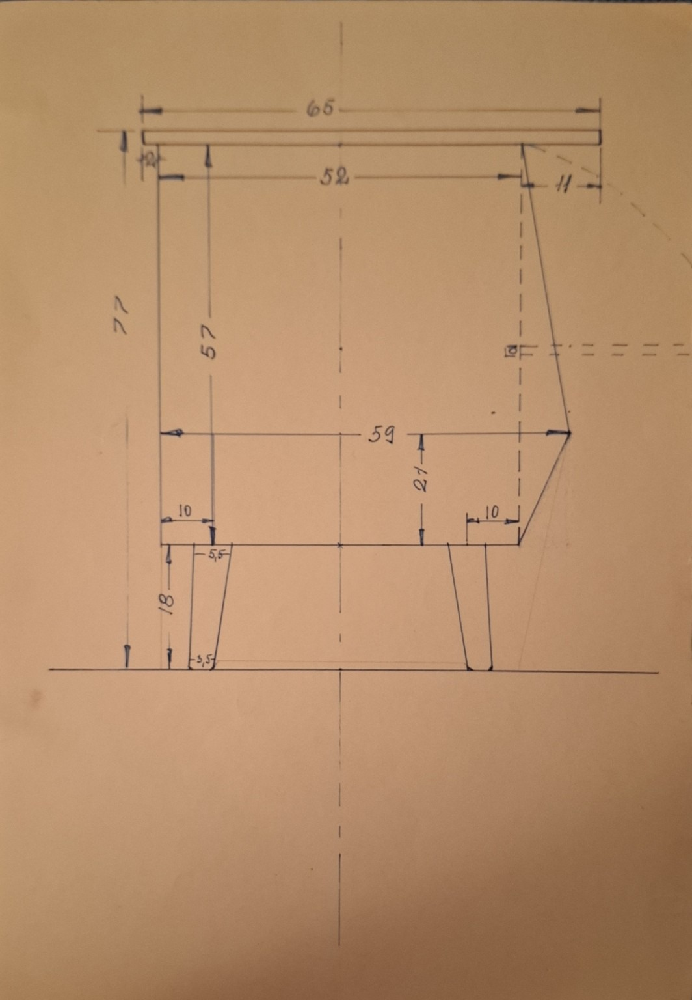
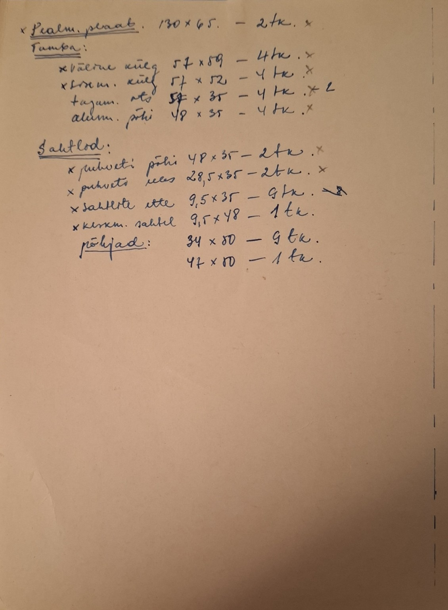
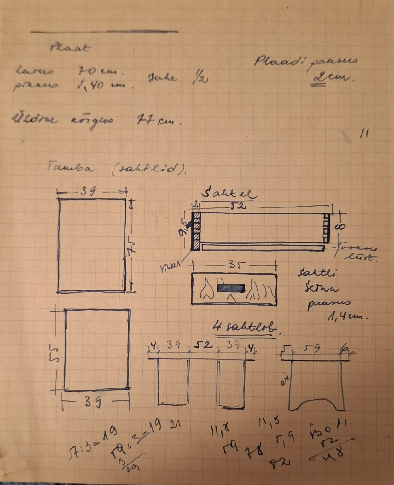
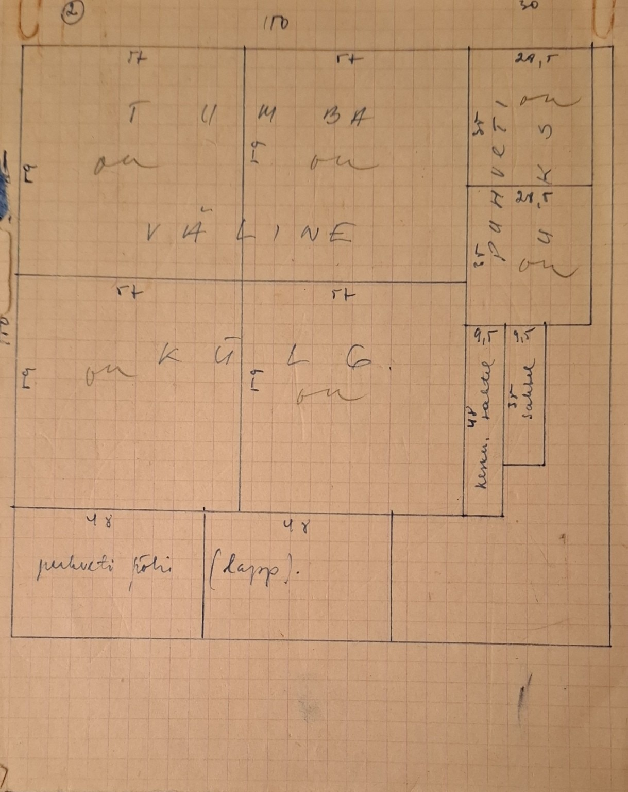
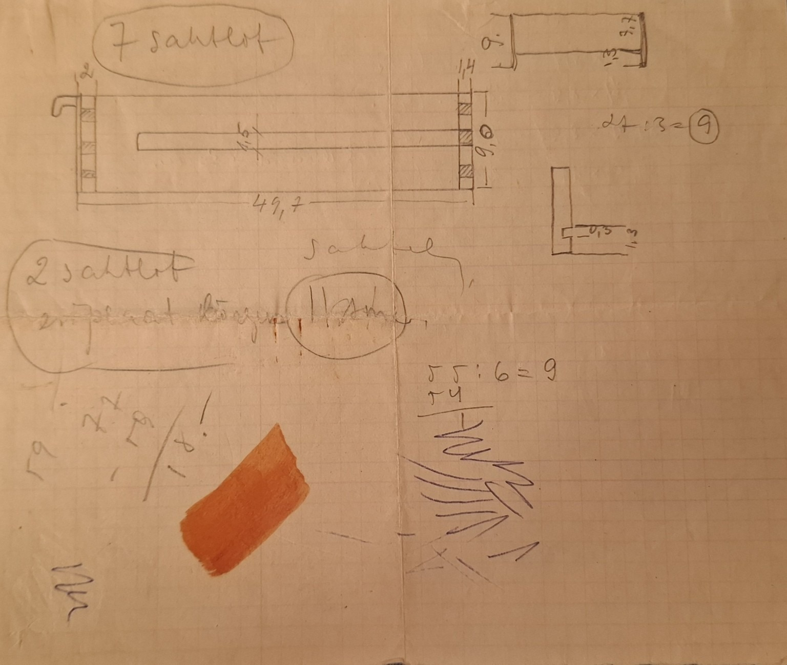

Väärispuit ja käsitöö, millest sünnib mööbel, mis kestab.
WOIP WOODCRAFT ei ole lihtsalt mööbel. See on lähenemine, kus tähtsad on proportsioon, kestvus, materjal ja rahulikult läbi mõeldud teostus. Meie jaoks peab ese elama ruumis kaua ja väärikalt.
Selle lehe üks oluline osa on töökoja pärand. Allpool olevad käsitsi tehtud märkmed ja joonestused põhinevad päris mööbliesemetel, mida minu isa valmistas. Need lehed kannavad endas töövõtteid, mõõte, kogemust ja suhtumist, millest WOIP WOODCRAFT samuti kasvab.
4 põlvkonda tisleritööd — Kaarel · Karl · Vello · Ahto
Mu nimi on Ahto. Olen neljanda põlve tisler. Mu vanavanaisa Kaarel oli tisler. Mu vanaisa Karl oli tisler. Mu isa Vello oli tisler.
Puutöö ei ole mu suguvõsas olnud kunagi lihtsalt amet. See on olnud viis elada – aus töö, mis tehakse kätega, mitte jutuga. Noorena õppisin tisleriks ja tegin seda tööd ka päriselt, aga elu viis mind pikaks ajaks mujale. Mitte et oleksin tahtnud. Vaja oli.
Ühel hetkel vestlesin ühe mulle väga kalli ja tähtsa inimesega. Ütlesin muu seas, et tegelikult tahaksin teha puutööd – mööblit, esemeid, asju, mis kestavad. Ta vaatas mulle sügavalt silma ja ütles: „Kui see on see, mida sa tahad teha, siis miks sa raiskad end mujal? Hakka pihta. Täna juba.”
Võtsin kuulda. Ja hakkasin.
Täna teen ma puust mööblit ja kõike muud, mida endale või kellelegi tellimustööna vaja on. Igal hommikul lähen töökotta hea tundega. Mitte kohusetundest, vaid tahtmisest ja sellepärast, et huvitav on. Värskelt jahvatatud kohvi ja puidu lõhn segunevad töökojas millekski uskumatult heaks. Ja siis, nautides enne tööle asumist seda head kohvi, mõtlen: veab mul – ma saan ka täna teha seda, mis mind huvitab.
Iga asi, mis mu töökojast välja tuleb, on läbi mu käte käinud. Ma tunnen puidu lõhna, kui seda töötlen. Ma näen, kuidas ta vormi võtab. Ja ma teen nii, et tulemus oleks tugev, aus ja kordumatu. Inimese tehtud. Minu tehtud.
Loodan, et see on mu töödes näha – et inimene, kes mu käest midagi saab, tunneb, et see on tehtud päriselt. Kätega, ajaga ja südamega.
Mina teen asja. Sina annad talle kodu ja oma loo.
Need arhiivilehed ei ole dekoratsioon. Need on päris töökoja märkmed — mõõdud, lõiked, sahtlid, konstruktsioonid ja mõtlemine enne valmimist. Just selline praktiline, aus ja põhjalik käsitöö on WOIP WOODCRAFTi taust.






WOIP WOODCRAFT keskendub ajatule mööblile, eritellimustele ja detailidele, mis peavad vastu nii kasutuses kui ka visuaalselt.
Riiulid, lauad, kapid ja teised mööbliesemed, mis on tehtud selge vormi ja pika kasutuse jaoks.
Eritellimusel lahendused, mis arvestavad ruumi, mõõte, materjale ja inimese tegelikke vajadusi.
Tööviis, kus konstruktsioon, tunnetus ja materjalivalik on sama tähtsad kui valmis eseme välimus.
Puit. Käsitöö. Iseloom.
Vaiksemat laadi mööbel.
Kui soovid eritellimusmööblit, koostööd või küsida mõne eseme kohta, võta ühendust.
Eesti
hello@woipwoodcraft.com
Instagram peagi tulekul